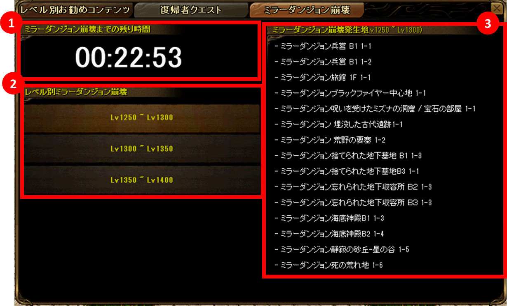
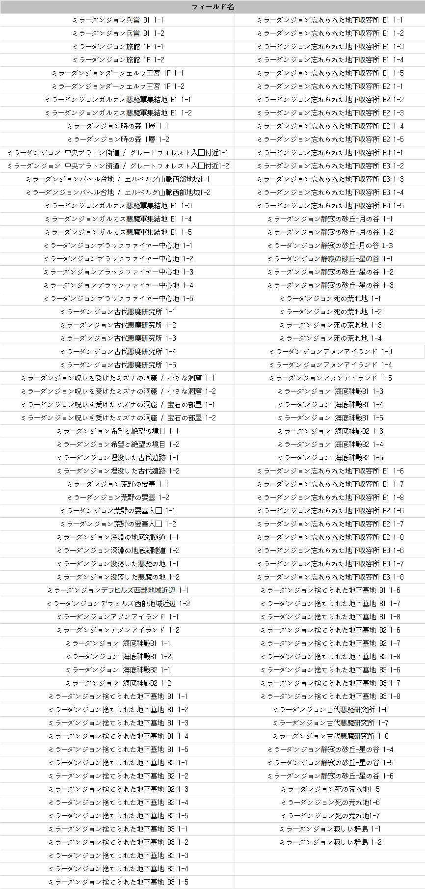

メニュー
トップ >>
ダンジョン >>
ミラーダンジョン崩壊
崩壊中はモンスターの能力値と経験値が大幅に強化されます。
2025年2月20日 (ver 0.0844) 実装 ／ 2025年10月16日 (ver 0.0865) 1,400〜1,600 レベル拡張
概要
入場方法
UI と挙動 (3時間サイクル)
モンスター強化と経験値
関連クエスト「ミラーダンジョン崩壊」
崩壊対象フィールド一覧
関連ページ
3時間ごとに ランダムで1ヶ所が崩壊状態 になり、レベル帯が 1,250〜1,600 区間の狩場に置き換わります。
■ ストーリー
ミラーダンジョンは RED STONE の強烈なオーラで過負荷となり崩壊し、強力になったモンスターたちが現実にどっと出てくる可能性が出てきた。これを阻止するために、冒険家協会とウィザードギルドは崩壊の兆しを把握してモンスターを事前に討伐する。
① ミラーテレポーター NPC から
・冒険家協会ブルンネンシュティグ本部の 「ミラーテレポータ」 NPC (50, 46) と会話
・通常のミラーテレポート同様、レベル帯+フィールドを選択して入場
② ガイドから
・ミニマップ下の 「Guide」 → 「ミラーダンジョン崩壊」 タブから入場
・崩壊状態のフィールドだけが表示される
※ 復帰者称号 / ポータル・スフィア / 風の羽 を所持した状態でフィールド名をダブルクリックすると、該当フィールドへ直接移動できます (移動条件のあるフィールド (クエスト等) は除外)。
ミラーダンジョン崩壊 UI: 残り時間 + レベル帯 + 崩壊中フィールド一覧
■ 対応レベル帯ボタン (実装時点での区切り)
※ クエスト「ミラーダンジョン崩壊」をクリアしなくても、崩壊フィールドの利用は可能です。
公式案内に掲載された崩壊対象フィールド一覧 (2025/02 時点)
※ 個別マップのレイアウトや座標については マップ一覧 をご参照ください。
出典: 公式お知らせ「ミラーダンジョン崩壊システムについてのご案内」(2025年2月20日) / 「10月の新規アップデート #7 ミラーダンジョン崩壊レベル拡張」(2025年10月16日)
ミラーダンジョン崩壊
既存のミラーダンジョンが 3時間ごとにランダムで崩壊 し、1,250〜1,600 レベル区間の狩場 に変化するシステム。崩壊中はモンスターの能力値と経験値が大幅に強化されます。
2025年2月20日 (ver 0.0844) 実装 ／ 2025年10月16日 (ver 0.0865) 1,400〜1,600 レベル拡張
概要
入場方法
UI と挙動 (3時間サイクル)
モンスター強化と経験値
関連クエスト「ミラーダンジョン崩壊」
崩壊対象フィールド一覧
関連ページ
概要
既存ミラーダンジョン (ミラーテレポーター から飛べるフィールド群) のうち、本来 1,250 レベル未満 のフィールドが対象。3時間ごとに ランダムで1ヶ所が崩壊状態 になり、レベル帯が 1,250〜1,600 区間の狩場に置き換わります。
■ ストーリー
ミラーダンジョンは RED STONE の強烈なオーラで過負荷となり崩壊し、強力になったモンスターたちが現実にどっと出てくる可能性が出てきた。これを阻止するために、冒険家協会とウィザードギルドは崩壊の兆しを把握してモンスターを事前に討伐する。
入場方法
入場経路は2通り。どちらでも到達できます。① ミラーテレポーター NPC から
・冒険家協会ブルンネンシュティグ本部の 「ミラーテレポータ」 NPC (50, 46) と会話
・通常のミラーテレポート同様、レベル帯+フィールドを選択して入場
② ガイドから
・ミニマップ下の 「Guide」 → 「ミラーダンジョン崩壊」 タブから入場
・崩壊状態のフィールドだけが表示される
※ 復帰者称号 / ポータル・スフィア / 風の羽 を所持した状態でフィールド名をダブルクリックすると、該当フィールドへ直接移動できます (移動条件のあるフィールド (クエスト等) は除外)。
UI と挙動 (3時間サイクル)

ミラーダンジョン崩壊 UI: 残り時間 + レベル帯 + 崩壊中フィールド一覧
| 崩壊サイクル | 3時間ごと にランダムで崩壊するフィールドが切り替わる |
|---|---|
| 事前案内 | 崩壊変更の 10分前 にチャットメッセージでアナウンス |
| レベル帯ボタン | キャラクターのレベル区間に応じてボタンが自動選択される |
| 切り替え時の挙動 | 10分間の途中通過の人とそれ以前にダンジョンに入っていた人の経過時間で、フィールド内モンスターは全部死亡 → 既存ミラーダンジョンのモンスターに変更されます |
■ 対応レベル帯ボタン (実装時点での区切り)
| 区間 | 実装時期 |
|---|---|
| Lv 1,250 〜 Lv 1,300 | 2025/02/20 オリジナル |
| Lv 1,300 〜 Lv 1,350 | |
| Lv 1,350 〜 Lv 1,400 | |
| Lv 1,400 〜 Lv 1,500 | 2025/10/16 拡張 |
| Lv 1,500 〜 Lv 1,600 |
モンスター強化と経験値
崩壊中のミラーダンジョンに対して、以下の補正がかかります。- モンスターの 防御力 / 抵抗力 / HP / 攻撃力 が上昇
- 取得 経験値も強化 される
- 能力値・経験値以外は既存ミラーダンジョンの仕様が維持される
関連クエスト「ミラーダンジョン崩壊」
| クエスト名 | 進行フィールド | 関連NPC | クエストスタート条件 |
|---|---|---|---|
| ミラーダンジョン崩壊 | 冒険家協会ブルンネンシュティグ本部 | ミラーテレポータ (50, 46) | 1,250 レベル以上 かつ 保有クエスト 11個以下 の場合に自動受注 |
※ クエスト「ミラーダンジョン崩壊」をクリアしなくても、崩壊フィールドの利用は可能です。
崩壊対象フィールド一覧
既存ミラーダンジョンのうち、本来 1,250 レベル未満 のフィールドが崩壊対象です。
公式案内に掲載された崩壊対象フィールド一覧 (2025/02 時点)
※ 個別マップのレイアウトや座標については マップ一覧 をご参照ください。
関連ページ
出典: 公式お知らせ「ミラーダンジョン崩壊システムについてのご案内」(2025年2月20日) / 「10月の新規アップデート #7 ミラーダンジョン崩壊レベル拡張」(2025年10月16日)